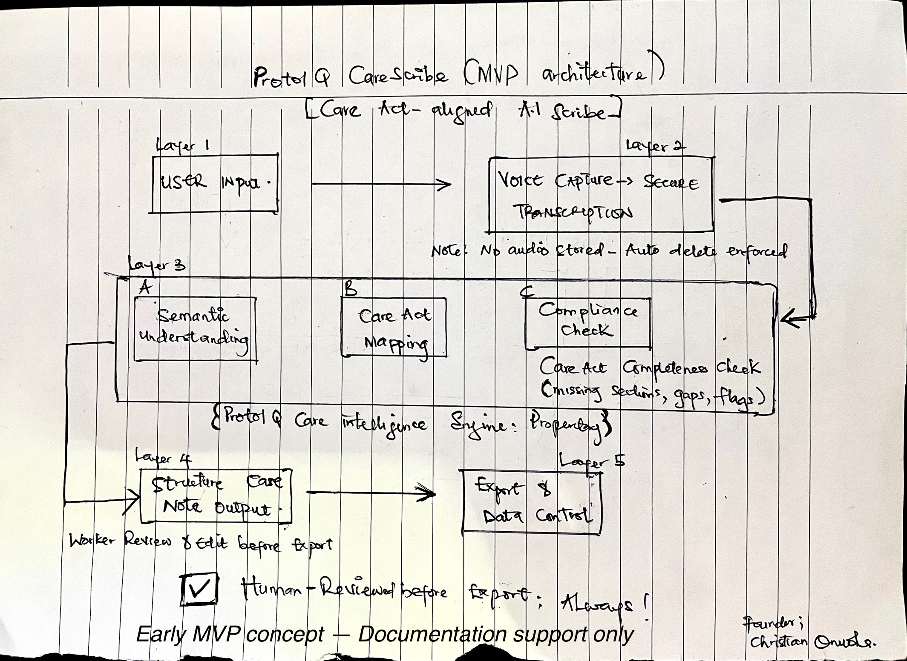

ProtolQ CareScribe turns recorded social care visits into structured, compliance-aligned care notes with risks, actions, and safeguarding signals clearly captured and reviewed by you.
The result? Burnout, inconsistency, and avoidable risk.
CareScribe listens to visit conversations and helps draft structured, Care Act–aligned care notes ready for human review, editing, and approval. You stay in control. CareScribe supports the paperwork.
Not just transcription. Care intelligence.

CareScribe supports documentation. Professional accountability remains with the user.
CareScribe is in early pilot. We’re validating real workflows not chasing features. If you work in UK adult social care and want to reduce documentation fatigue, we’d like to hear from you.